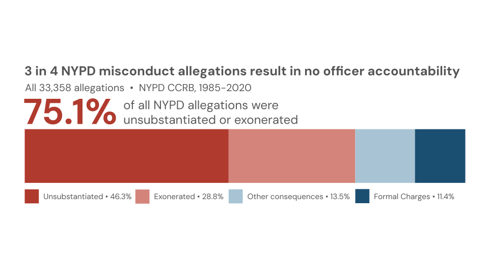
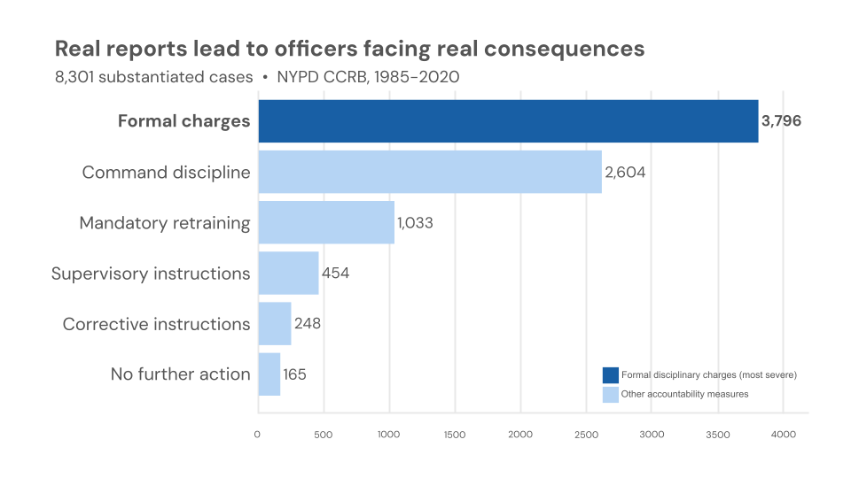

Proposition: Most NYPD misconduct allegations do not result in officer accountability.
FOR the Proposition

Design Decisions and Rationale:
-
Decision 1 · Full 33,358-allegation universe shown — no filtering (Score: +2)
Unlike Concept A, this chart uses the complete dataset without any filtering by outcome. The subtitle explicitly states "All 33,358 allegations," and the proportional bar reflects the full distribution. -
Decision 2 · Warm red tones used for unsubstantiated and exonerated outcomes (Score: -0.5)
Unsubstantiated and exonerated outcomes are encoded in two shades of red. These are legally neutral findings, as an unsubstantiated complaint means the evidence was insufficient, not that misconduct did not occur, but these colors tend to read as negative or alarming in visualization conventions. -
Decision 3 · "3 in 4" headline framing rather than "75.1%" (Score: -0.5)
The title uses a ratio rather than a percentage. They are numerically equivalent, but ratio framing tends to feel more concrete and personal than a percentage, since it maps onto an implied individual experience rather than just a statistic. -
Decision 4 · Substantiated outcomes split into "Other consequences" and "Formal charges" (Score: +1)
Rather than grouping all 8,301 substantiated cases into one category, the chart separates formal charges (11.4%) from other substantiated outcomes (13.5%). Formal charges represent the most severe end of the CCRB's penalties, and it gives readers a more accurate picture of what "substantiated" means in practice. It also has the visual effect of reducing the apparent footprint of the blue segments relative to how they appear in Concept A.
AGAINST the Proposition

Design Decisions and Rationale:
-
Decision 1 - Universe scoped to substantiated cases only (Score: -2)
The visualization displays only the 8,301 allegations the CCRB substantiated, omitting the 25,057 that were unsubstantiated or exonerated. The subtitle reads "8,301 substantiated cases" without reference to the full dataset, so a reader has no basis to ask what fraction of all complaints this represents. Showing the full distribution would reduce the apparent scale of accountability considerably; only about 1 in 4 allegations reaches any outcome at all. -
Decision 2 - Three command discipline tiers collapsed into one bar (Score: -1)
The CCRB distinguishes between Command Discipline, Command Discipline A, and Command Discipline B. The differences in severity between these are not explained in public-facing documentation. Collapsing all three into a single "Command discipline" bar (2,604 cases total) reduces clutter and avoids confusion. It also produces a larger bar that sits more prominently in the chart. Keeping them separate would have yielded three mid-sized bars whose counts are less striking. -
Decision 3 - "Formal charges" bolded and encoded in dark navy (Score: -0.5)
Formal charges are given a bold label and a saturated dark navy, while all other outcomes share a lighter blue. Formal charges are the plurality outcome, but the two colors imply a greater distinction than the data necessarily supports. The legend reinforces this by grouping everything other than formal charges under a single label. -
Decision 4 - Labels rewritten from original CCRB terminology (Score: -1)
CCRB outcome labels such as "Substantiated (Command Lvl Instructions)" and "Substantiated (Instructions)" were shortened and reworded to "Supervisory instructions" and "Corrective instructions." The original phrasing includes qualifiers that the rewritten versions drop. Whether the new labels seem more or less severe than the originals is somewhat subjective, but they present the outcomes as more deliberate and consequential-sounding than the source terminology conveys. -
Decision 5 - Title uses causal language (Score: -0.5)
The title implies a reliable causal relationship between filing a complaint and an officer receiving a consequence. "Real" appears twice, which implicitly preempts a skeptical reading. Since only 24.9% of all allegations are substantiated, the title's framing applies to a minority of complaints, which is not visible anywhere in the chart.
Final Reflection
Our proposition, that the NYPD holds officers accountable for civilian complaints, came from noticing early in our data exploration that the same dataset could support two completely opposite conclusions depending on which cases we chose to include. Our main decision was to make the FOR side only show the substantiated 8,301 cases, while the AGAINST side started from all of the 33,358 allegations that were filed (of which 15,448 were unsubstantiated, 9609 were exonerated, and 8,301 were substantiated). Neither version falsifies data, but showing only the substantiated cases drops 75% of the allegations that never amounted to any consequence, which is the most important part of the story we’re telling.
Building the FOR chart ended up being simpler than we expected once we committed to showing only the substantiated cases. From there, most of the remaining decisions were about making those cases look as consequential as possible. The label renaming was the first choice. The original CCRB categories like “Substantiated (Command Lvl Instructions)” sound bureaucratic and minor, and rewriting them as “Supervisory instructions” made them sound more like actual discipline without changing what they refer to. We collapsed the three command disciple tiers into a single bar, which not only cleaned up the chart visually, but also produced a second large bar to give an impression of a busy and functioning system. The color choice (dark navy for formal charges, lighter blue for everything else) was more straightforward. We wanted formal charges to read as the defining outcome even though it only applies to about 45% of substantiated cases. For the AGAINST chart, the numbers were clear enough that the main decisions were really just about framing. The “3 in 4” title came from feeling that it reads more personal in a way that “75.1%” doesn’t. That is, it describes what happens to an individual complain rather than just a statistical aggregate. We spent a significant amount of time on the color of the proportional bar. Using warm red (that tend to read as negative/alarming) for unsubstantiated and exonerated outcomes isn’t entirely honest since both are technically neutral legal findings, but we decided it was in keeping with the overall argument of the chart to use these colors.
The part of the project we found hardest was actually assigning the deception scores. Some of them kept changing for us, especially the “3 in 4” framing as it’s technically just a different way of writing 75.1%. The color choice in the AGAINST chart was similar. At some point, we had to decide whether using red is deceptive if the data genuinely looks bad for the NYPD no matter how you color it. We’re still not entirely sure. What we do think is that the most impactful decisions were also the hardest to even notice while making them. Filtering the substantiated cases in the FOR chart felt completely natural at first, and it took a while to realize that choosing that denominator was the biggest thing shaping what the chart said. Looking at the final charts, we think the AGAINST one is more honest overall, mostly because it doesn’t hide what the data actually shows, though it’s still not totally clean.